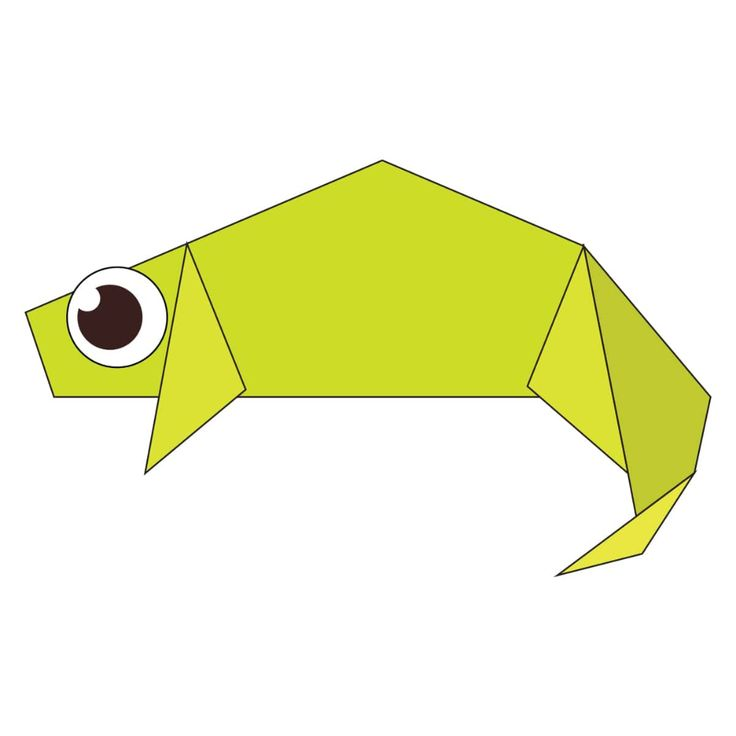

Click on the Image to see the tutorial
- They store fat in parts of their bodies known as humps.
- They can live for about 40 years.

Click on the Image to see the tutorial
- They store fat in parts of their bodies known as humps.
- However, it is a misconception that chameleons change colors to match their surroundings.

Click on the Image to see the tutorial
- There are generally two types of cicadas.
- Annual cicadas emerge every year in late June or August, while periodical cicadas emerge in cycles of 13 or 17 years